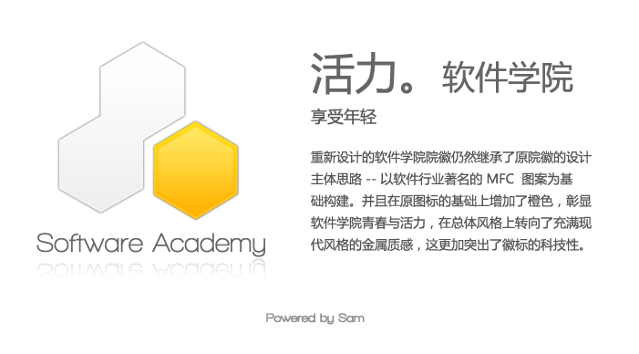
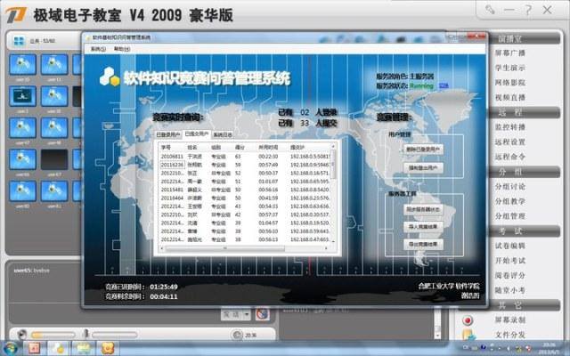
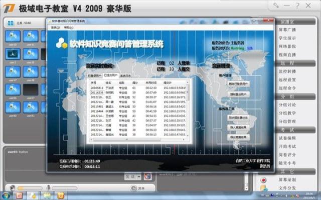
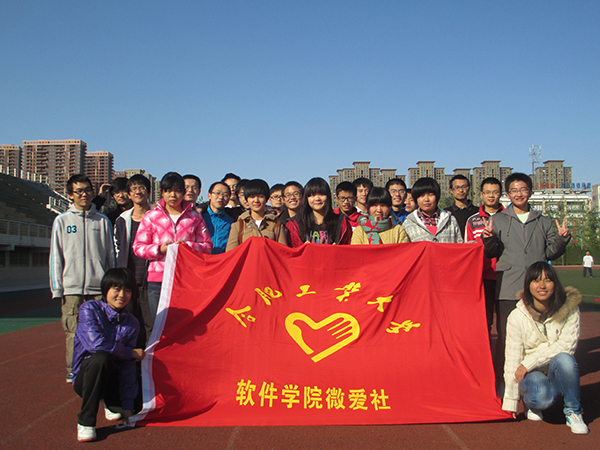
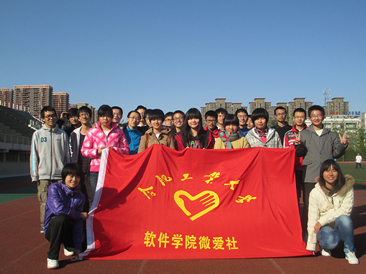

合工大软件学院2015迎新专题
2015级的小伙伴们，你们好，欢迎来到合工大软件学院（以下简称“软院”）。通过这篇文章中，我们将简单介绍一下软件学院，让各位尽快了解一个真实的软件学院。欢迎各位（准）新生加入软院2015级新生群，和学长学姐在线交流，群号见文章最后。
合工大的软件学院怎么样啊？
软院前身是计算机学院下面的一个专业，后来响应国家发展软件行业的号召，成立了软件学院，将“软件工程”这个专业划入了软件学院（“学院”跟“系”是一个意思，只是叫法不同，并不是专科或者成教）。学院目前只有软件工程一个专业，暂且还没有开设新专业的计划。
从总体的教学质量上讲，合工大属于211高校，不会差到哪儿去，但相比国内的一流高校，还是有明显的差距的（不要相信所谓官方数据，在中国，这种东西有多少水分大家心知肚明）。但是要提醒各位考生和家长，学校好坏只是一个环境，想出成绩还得靠自己努力，二本院校的学霸也能比过清华北大的学渣，因此不要把这个看得太重，商业化后的教育事业，到哪儿都是那么回事儿。
学院的师资力量，这个要和大家说清楚：名义上属于软院的老师，目前就两个，绝大部分师资力量都是从计算机、管理、电气、马克思等兄弟学院“进口”的。一方面，这和软院成立较晚有关，新配给的师资少，另一方面，师资力量的复用这在全校范围内都是一样的，只要是同一门课，不管哪个学院开，都是那几个老师在上。但这并不影响教学质量，老师本身是很好的，像偶春生、胡敏、郭骏、聂会星、李声闻、朱士信、朱少民等等，都是公认的非常好的老师。这只不过是老师的行政归属问题，和老师的质量无关。就像英语课请来外教，不见得非得要人家加入中国国籍吧。大家要理性看待，不要愤青。学院的老师有一部分是从外面公司请来的，是在职的工程师，并非全职的教师，他们会结合生产环境来给大家进行授课，讲课风格和大学教授会有一些不同，也算是学院的一项教学特色吧。
学院里还有不少非常厉害的学长学姐，会以免费培训的形式进行补充教学，内容既包括对本专业基础知识的复习，也包括一些学校里不会教但是很实用的软件技术，只要感兴趣谁都可以去听。这些学长学姐都是大三、大四，甚至研究生来的，在各自喜欢的领域研究的较为深入，已经达到可以带新人的程度，甚至比任课老师更清楚大家最关心什么、哪些地方最薄弱，因此他们讲的课全都是干货，强烈推荐大家去听，非常值。
（想知道怎么才能报名参加这个培训吗？快来新生群吧！学长学姐告诉你！群号见文章最后）
软件学院有多少人啊？男女比多少？
软件学院成立于09年，现有2届毕业生以及4个年级的在读生，每个年级2个班，每班40+人，本科在读的加在一起大概300+人。相比其他学院动辄成百上千人的规模，我们属于绝对的小院。但人少也有人少的优势：首先两个班上课、住宿都在一起，互相熟悉之后大家都是不分彼此的；同专业的学长学姐其实就住在楼上楼下，并且平时有很多机会可以互相接触到，跨年级交流非常方便；小院的另一个优势就是和辅导员之间关系非常融洽，因为人少，所以辅导员可以花在每个人身上的精力就会相对多一些，说话办事会比较方便（大院导员1个人管上百号人，才没那么多功夫来鸟你呢）。男女比例在6:1和13:1之间徘徊（毕竟人口基数少，每相差一个女生，数字就会大不一样），这在工科院校是非常正常的数字。
（想知道上届最漂亮的学姐长什么样吗？快来新生群吧！学长学姐告诉你！群号见文章最后）
合工大校区好几个，软件学院在哪里？
软件工程专业4年全部都在翡翠湖校区（俗称新区），在其它校区没有任何“领土”，除了极少数课程因为仪器设备在南区（学校本部，在合肥，俗称“老区”或者“南区”），会安排到那边上几节课，绝大部分教学活动都在新区进行。
学院院办也在图书馆（每个学院都有个“学院办公室”，简称“院办”，大体跟高中时候的班主任办公室差不多，不过别指望在这里找到任课教师，院办是导员和学院其它领导办公的地方，是一个行政办公室，这是大学和高中的一大区别），从图书馆北面“软件学院”四个鲜红的大字右边那个门进去再右转就是了，院长办公室和学生组织办公室挨着。导员平常都在院办，有事情可以来这里找。学生社团开会通常也在这里，钥匙在各组织的头头那里，有需要的时候可以申请借用，事后归还。
（想知道导员姐姐长啥样吗？快来新生群吧！学长学姐告诉你！群号见文章最后）

听说学院有自己的机房？要不要自己带电脑？
学院现有两个机房（小道消息说会扩建第三个，但直到现在仍然只是小道消息），坐标图书馆，对于学霸们来说是个很不错的资源，自习不用占座，冬夏还有空调，校园网和外网都通。
机房主要用于专业课的上机教学，以及本院学生的晚自习，年级会议和一些小型的学生活动也经常在这里进行，只要学院批准就行。机房设备很完善，投影、功放、FTP……该有的都有。电脑的配置还算不错，除了显卡一般之外其它都够得上主流水平，不像一些公共机房的机子，估计还是世纪初的配置。第一机房大一些，能容纳两个年级；第二机房略小，能容纳一个年级。
机房电脑的配置，这里简单说明一下：清一色的Acer台式机（校企合作的单子），四核处理器，入门级显卡，2G内存，40G的硬盘，不带光驱，系统盘装有还原卡，非系统盘没装，但毕竟公用的，还是建议各位上机时自备U盘。电脑是多系统的（教学需要嘛）XP、Win7、Win8都有，Linux系统是通过虚拟机启动的，进Windows之后用VMWare选自己习惯的发行版启动就好了。机房有自己的FTP，在教师机上。学校并没有给学生分配服务器空间，但如果是项目需要，可以向学院申请，学院会帮忙联系校方授权开放相关接口，或者帮你申请项目经费去买，个人练习之用的话在自己的笔记本上搭建服务器环境就好了，或者也可以向第三方租用。
机房的所有权归图书馆，但使用权归学院，有点像租赁的意思，不过名义上算学院的，钥匙也在学院这儿。进机房不用“带套”，但是要签到，不是软院的不给进，发现的话会被“请出去”。所以其它学院的孩子们就只能眼巴巴地看着我们享受空调，却只能在外面煎熬了。
机房的网络属于校园网，可以访问校园资源和超星图书馆等数据库。网速曾经很快，下载速度论MB/s，但后来学校重新规划了线路，现在就只有一般水平。
电脑要自己带（大学里这个肯定要的，不管你是什么专业）。品牌方面，各大品牌的笔记本都有人用，Macbook和Alienware也零星有几台（总有那么几个土豪不差钱的），总体价位基本在3K~6K，和市场主流水平持平。有的是开学就带的，有的是来了之后再买的，都可以，看你方便。少数人除了笔记本还另配了台式机（经验告诉我们，配台式机的都是大神，相信我，抱他们大腿绝对没错）。不过还是推荐买笔记本，一来携带方便，出了寝室也能用，晚上断电了也还能支撑一段时间，保险柜里也放得下，这都是台式机做不到的，二来寝室电压有限制，一个台式可以顶两台笔记本了，倒是还没见到有买一体机的，其实也是个不错的想法。买台式机的基本是用来做服务器的，或者是为了追求额外的性能，这个看个人需要，并非必须。笔记本可以带进机房使用，把机房台式机的供给断了就能接电、接网，不过走之前要接回去，素质问题不解释。
（想知道怎么在机房上网不花一分钱吗？快来新生群吧！学长学姐告诉你！群号见文章最后）
毕业生出路怎么样啊？就业的话工资能有多少？
09级是学院第一届毕业生，出路都还不错，在外口碑也都不错的。有几个出国的，都是名校，像什么宾夕法利亚大学，全美排第7的，还有南加利福尼亚大学，也很厉害的。考研有去科大、浙大、华中科、中科院、国防科大的，保本校的当然更多点。就业方面有签思科、华为、讯飞、虹软、巨人网络、欢聚时代、锐捷等名企的。。。所以努力吧，金饭碗不是梦。
10级在腾讯、网易、迅雷、华为、中兴、讯飞、华硕、去哪儿、携程、浪潮、同步网络、37玩、文思海辉等公司都有人；考研党去了北大、北航、上交、复旦、同济、港中文等，保本校的继续一群；留学一族现已占领洛杉矶、马里兰、布里斯托、伦敦、东京。总体趋势比去年略好，互联网企业占比明显提高。
11级目前正处于毕业季，已知的有保研去哈工大、科大的，考研、就业和出国的暂时还没有准确消息，待日后继续更新。
就业的同学绝大部分都是技术岗，做软件开发与测试，各个细分方向的都有。少数去做了产品经理等非技术岗，混的也不错。毕业季的工资从4、5千到1万多的都有（不同地域不同公司不同岗位之间差别很大，好坏优劣需要结合具体情况判断，无法统一概括），毕业一年之后通过跳槽涨工资的有不少，平均涨幅在1000左右。
（想知道怎样才能让大牛学长/学姐帮你内推BAT吗？快来新生群吧！学长学姐告诉你！群号见文章最后）
软件工程……具体是学啥的？
软件工程专业，简称“软工”，本科学制四年，毕业后获得工学学士学位；硕士阶段回归计算机学院，现有两届在读研究生；博士点有，但因为学院成立时间短的缘故，初代学长学姐（也就是09级）也不过研二，因此暂无在读的博士可供参考。
学的内容其实和计科（计算机科学与应用，计算机类专业中的一大热门）差不多，只不过从培养目标上讲，计科偏理论多一点，软工偏工程多点，实际体会上并没有多大本质区别，都是学计算机的。
学计算机的一般都自称“程序猿”（Code Monkey），没错，是“猿”而不是“员”，之所以如此自黑，主要是因为计算机类专业属于典型的理工科，学计算机的人给人感觉比较木讷，更擅长和机器交流，而不善与人交流，相比“人类”，他们活的更像是“猿类”，这也导致了大部分的“程序猿”都是单身的现状。当然实际情况并没有这么夸张，这只是一种行业自黑而已。同类的还有“码农”、“搬砖狗”等。
咱们专业属于专业课开得比较早的，大一就有，不过一开始主要还是基础公共课，像高数、英语这些的，一定要好好学，因为大学的知识体系跟以前的完全不同，我们当时没有学长提醒我们这点，有很多人在这上面栽跟头了。大学的知识体系，后面的知识是以前面的知识为基础的，所以如果前面学不好，后面就会听不懂，进度跟不上，很容易就放弃自己，陷入恶性循环，然后就更学不好了，挂科什么的多半都是这么来的。所以我再一遍强调，一开始的基础千万要认真学，不然后面有的你受的，到时候可别怪我没提醒你
。我们主要学习的编程语言有2种：C++、Java，到了高年级会学C#、汇编等其他语言，但只是涉及，并不做重点。非计算机专业因为要准备计算机二级考试，所以也会学习一些简单的编程，但他们学的是C语言，相对简单，外加他们本来对这个兴趣也不大，考完就算的，所以完全不用担心说他们会对你构成威胁。（但也还是有当初选错专业，后来自学计算机成才的，真要碰上这等跨专业的牛人那你也拦不住啊。。。）
像思修、毛概、马哲、近代史、军理这些的课程，每个专业都有，逃不掉的，考研也有要求。还有高数、大物、线代、概率论这些数学方面的东西，是后面的基础，尤其是微积分这一块，几乎每一门都要用到。微积分必须熟练！
这里专门提一下，高数和大物这两门课挂科率特别高，各位一定要千万注意。（高高的树上挂了好多人，大大的雾里也让很多人迷失了方向）
专业方面，数据结构、数据库、操作系统、离散数学、组成原理、计算机网络，这些都是计算机相关专业学生的必修课，精确到软件工程专业的话还有软件测试、需求工程、人工智能、嵌入式、软件体系结构、软件构造等等诸多课程。
学校毕竟只是一所教育机构，它所能产出的是“人材”，而不是“人才”，人才是要靠自己锻炼出来的。很多人不解，为什么一边是大学生毕业找不到工作，一边是就业单位诉苦说招不到人，究其原因，很多大学生仅仅是跟随学校的脚步走，所学的东西都只是些皮毛，很多东西又都已经过时了，无法胜任新时代的工作需求。所以我们除了要学好学校安排的这些课之外，还要自己去探索，找一个自己关注的领域，深入了解前沿科技的发展，紧跟时代的步伐，这才是王道。
（想知道现在最值得学习的编程技术是什么吗？快来新生群吧！学长学姐告诉你！群号见文章最后）

我从来没写过代码，能学会吗？需不需要提前准备什么？
可以的，报考不需要任何的专业基础，绝大部分人最开始来的时候也都是什么都不会，从零开始的，只有少数人从小就对此感兴趣并且已经有一定的基础。上课时候会从最基础的开始讲，不会因为有人已经会了就跳过不讲。除了常规的教学计划之外，院学生会和院科创中心会安排学长学姐帮助复习和理解，完全不用担心零基础跟不上。
至于提前准备，这个也不是必要的，当然如果你确实感兴趣，暑假里又闲得无聊想先试试的，可以到新生群里和学长学姐们交流一下，我们会帮你选择一些合适的内容带你入门。
（想知道自己和哪种编程语言最有缘吗？快来新生群吧！学长学姐告诉你！群号见文章最后）
这学费……为啥这么贵？
软件工程专业的学费相比其他专业要贵不少，很多人对此表示疑惑，为什么这么贵？这个问题一直以来都是饱受争议的，这里大致解释下：一方面，全国各大高校的软件工程专业普遍都贵，有些是和工大一样每年1万多的，有些是前两年和其他专业一样几千块钱，后两年将近2万的，总的算下来，其实大家都差不多，行业水准（不过合工大似乎在同类院校中收费算贵的，毕竟现在教育也都商业化了，所以……）。另一方面，学院的不少老师是从企业里请过来的，还有一些从国外引进的教学内容，到了高年级还有不少校企合作的实习等等，版权啊、合作啊这些都是比较费钱的。教材不包含在学费内，是另外付钱的（不过教材不是必须从学校买，甚至可以不买，要买的可以自行网购，或从旧书店、学长学姐那里淘便宜货，或者下载电子书，因此这部分开销自己看着办，可多可少）。计算机类的书普遍又厚又贵，这个到哪儿都是一样的。至于这钱花的值不值，就看你会不会选，以及有没有认真去读了。
兴办软件学院是由国家发布政策推动的，各大高校的软件学院都是这么来的。不过此举的目的是为IT公司提供员工，而不是为国家科研输送人才，因此属于自费培养，国家投入的补贴少，并且允许高校在这个专业上按实际成本收费（反正就是国家允许你收费高），那么同样的成本，学校出于盈亏考虑，缺的部分就落到学生头上了。
学费压力大，但并不表示来的都是富家子弟，事实上有一半的同学都申请了助学金和助学贷款，除此之外学校还有很多社会资助型的助学金，学校也有各种补贴，奖学金也很丰厚，所以如果你自己平常注意节约、成绩排名又比较靠前的话，费用的问题其实学校能帮你解决不少。
（想知道怎么花最少的钱上完大学吗？快来新生群吧！学长学姐告诉你！群号见文章最后）
软件学院的院徽 - 1分钟教你如何找到组织
院徽是学院VI的一部分，在各种文件、材料、宣传品上面都能看到。找到它，就说明你找到组织了。院徽的主体是MFC的标志，这是一个Windows平台下的基础类库，主要用于编写带图形化界面的Windows程序。橙色代表活力。
（想知道是谁设计了这么好看的院徽吗？快来新生群吧！学长学姐告诉你！群号见文章最后）
学生会 - 比恋爱更美好的回忆
软件学院的学生会成立于09年，与学院同时成立，是学院三大学生组织之一。
学生会主要负责组织一些校级、院级的活动，例如各种运动会、比赛、晚会等。学生活动是大学文化的重要组成部分，不管是组织还是参与，如果完全没有体验过的话，你的大学生活是不完整的，你总不希望等毕业之后回忆自己的大学生活，除了书本就再没其他了吧。
如果你不是一个100%的纯学霸的话，我推荐你去参加一些社团组织，接触一些社交圈子，毕竟完全的书呆子是不怎么受人待见的。尤其毕业之后找工作，光能力强还不够，还得有点路子。人脉这东西，平时不积累，用时方恨少。加入学生会是积累人脉的众多方式中一个很好选择。
每个学院都会有自己的学生会，负责组织开展院级的活动，和组织参加校级的活动；校级的还有一个校学生会，代表学校组织一些校级的活动。学生会的活动最多，接触社会的机会也最多，学校中大部分的活动都是由各院的学生会在办。在这里你可以体会一群人共同为目标而努力奋斗的痛快，很多同学情谊也都是在这些过程中建立起来的，这其中的欢笑和泪水，只有经历过的人才会明白，也才会倍加的珍惜，不忍离去。
咱们学院最出名的活动当属软件节，从第一届学生会就开始办，从未间断，时间在“五·四”青年节前后。软件节的当红项目就是免费软件派发，现场会准备各种日常需要的软件以及各种专业软件，免费提供给需要的同学。我们还支持“点菜”，如果你需要的软件我们这里尚且没有储备，我们可以专门帮你去找，找到了再给你。同时我们还面向全校免费帮助解决各种电脑软件问题，例如安装、卸载、系统优化、重装系统等。
（想知道怎样在1分钟之内让你的人际网络扩大一倍吗？快来新生群吧！学长学姐告诉你！群号见文章最后）


科创中心 - 大神的聚会，邀你来参加
大学生科技与创新中心（简称“科创中心”），前身是大学生科技与创新协会（简称“科协”），成立于09年，软件学院三大学生组织之一。同样的也分院级和校级，承担不同的活动。（这里所说的主要是我们自己的院级科创中心）
科创中心主要以科技创新为主线，社交元素相对较少，更多的是一些技术交流。具体到咱们学院，最出名的要数技术培训。科创中心会不定期举办一些技术培训，类似于公开课，每次培训会请到不同的学长学姐来给大家讲课。这些学长学姐都是在自己感兴趣的领域做出过一些成绩，对该领域的技术足够熟悉到可以带新人的地步，才会被请来给大家培训的，因此每次培训都是满满的干货。讲课内容涵盖了各个方面，有针对课堂内容的复习和补充，有时下流行技术的拓展教学，有项目竞赛的介绍和组织，非常值得去听。
学院每年有一个软件基础知识竞赛，比赛使用的是学生自己开发的系统，从题库到抢答系统、计分系统，都是由科创中心的成员（11级一位大牛学长，个站：http://www.zjhzxhz.com）自己开发出来的，绝对自主知识产权。该系统已经服役了多年，作者目前依然在继续着更新与维护工作，以迎接下一轮的挑战。同样是这位学长开发的“软件学院综合测评管理系统”也已经经过了第一轮的试用，效果非常之好，极大提高了数据统计的效率，往年要花好几天才能完成的工作量，现在分分钟就可以搞定。
科创中心还包括一个学生自发成立的LUG（Linux User Group），这是一个由Linux爱好者自发组建的社区，在全国各地都有兄弟小组。LUG致力于Linux操作系统的推广和交流，推动Linux的发展。LUG面向全校开放，召集有识之士共同参与进来。想要加入LUG大家庭的条件只有一个，那就是一颗热爱技术、乐于分享的心。
科创中心今年还新办了一个创新基地，利用学校资源汇聚一批有技术有想法的同学去参加一些创新项目和程序设计竞赛，是做项目攒经验的理想途径。
（想见识一下上届学长开发的超炫项目吗？快来新生群吧！学长学姐告诉你！群号见文章最后）

 

微爱社 - 最微小的爱，最温暖的爱
软件学院青年志愿者联合会，也叫“微爱社”，是软件学院三大学生组织之一，成立于2012年3月，是学院目前最年轻的学生组织。
微，即微小，作为一个小社团，虽不能为社会做出什么特别巨大的贡献，但我们会以最大的努力，尽全力奉献出自己的爱心。微爱，谐音“为爱”，为爱奉献，用心服务。
微爱社目前有好几个非常有影响力的活动：例如“美丽校园”系列活动，志愿者们会不定期去到校园各处清理顽固垃圾，为大家营造一个干净的校园环境。再比如“下乡支教”，微爱社与合肥市桃花工业小学联手进行定向支教，不定期为那里的孩子们带去新鲜的知识。除此之外还有结合专业特色的计算机免费维修服务，计算机二级考前辅导等实用活动。
“志愿者”是一个非常正规、非常受人尊敬的身份，每位志愿者都会有一张志愿者证，记录了你所有的志愿行为，拥有它将会为你的人生写下永久的一笔光彩。
（想知道成为一名志愿者对自己的未来有什么好处吗？快来新生群吧！学长学姐告诉你！群号见文章最后）
 

联系我们
【合工大软件学院2015级新生QQ群： 432982838】（入群验证信息：“15+省份+姓名”）
【学院官网：http://rjxy.hfut.edu.cn/cms/】（唯一地址，不是这个域名的都是假的）
【作者：一位虽已毕业但还在迎新的10级学长，QQ：782940333】（加好友请先自报家门，否则谢绝）